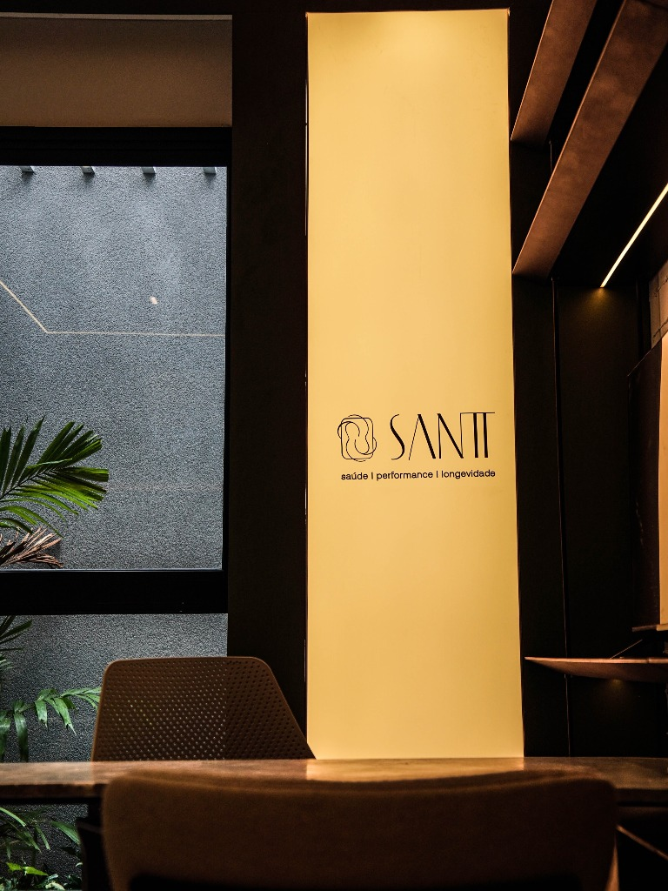

Medicina Integrativa • Nutrição • Longevidade
É aqui onde saúde,
performance e longevidade
se encontram.
Abordagem médica e multiprofissional baseada em evidências científicas, desenhada para otimizar sua composição corporal, saúde celular e alta performance em Natal.

12+
Anos de Experiência
4.500+
Vidas Transformadas
99.4%
Índice de Satisfação